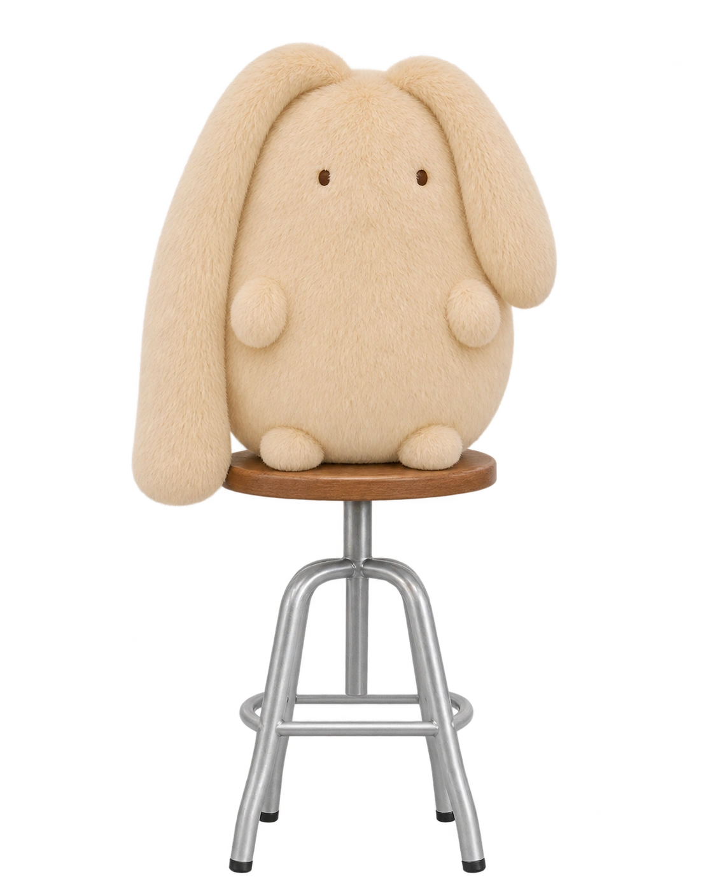
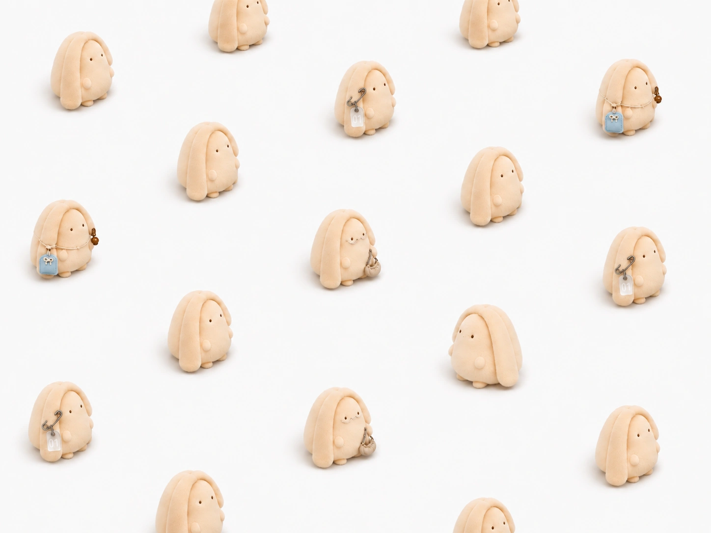
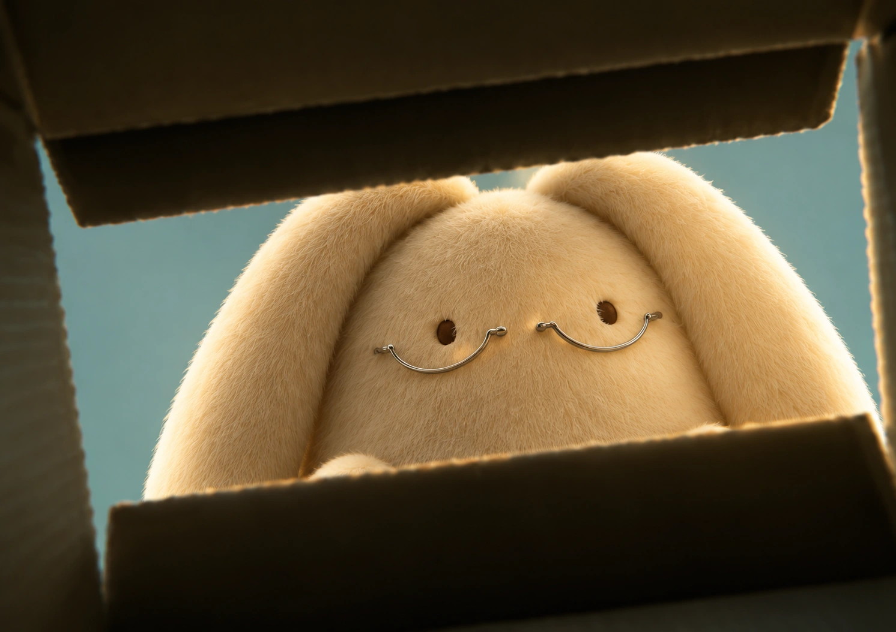
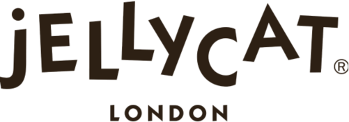
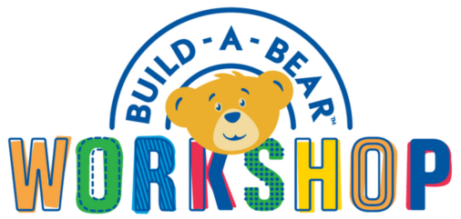

Brand and
Project
Overview
Yu Yuedong
YEAR: 2026
Tiny Strange is an independent design toy
brand from China. It uses AI and designer
refinement to turn a customer's mood and
keywords into a small collectible plush friend.
Its main overseas market is the United States.
Soft Friends is the official product series. The
customer chooses a mood, colours and one
keyword. AI gives the first character idea, and
a designer will adjust the face, colours and
small symbols. Each character uses one fixed
18 cm plush body, with a character card and
a gift box.
The first customers are Gen Z and young
millennial consumers aged 18 to 30 in the
United States. They like character toys, desk
objects and personalised gifts. Different
moods deserve different little friends. Being a
little strange is not a problem. Soft, Odd and
Personal guide the brand.
SOFT: The plush and its character
have a gentle feel.
ODD: A small strange detail makes
the character different.
PERSONAL: The customer's mood,
colours and keyword.
PRODUCT: 18 cm collectible plush,
dense minky pile about 2 to 4mm.
Includes a character card and a box.
ORIGIN: China
MARKET: United States





Jellycat
A premium design-led plush toy and
gift brand from London.
Jellycat uses black, white and orange,
with bright blue on some digital
pages. The range includes animal
plush, Amuseables characters, bags,
charms, baby gifts and books. Its
philosophy is playfulness, creativity
and sharing joy.
Key observation: Original characters
and playful retail can make plush toys
become emotional gifts. Jellycat uses
a brand-led character catalogue.
Squishmallows
A soft character-led collectible plush
and lifestyle brand for fans of all ages.
Squishmallows uses a soft
multicolour palette: teal, pink, purple,
yellow, orange and lime green. The
plush comes in many sizes, including
original characters, seasonal
editions, licensed collaborations,
mini collectibles and pillows. The
brand focuses on comfort through
softness.
Key observation: Names, biographies
and collecting can build a large
character community. It has a large
character library.
A global retailtainment brand. It
combines personalised plush toys
with interactive store experiences.
Build-A-Bear uses blue, warm yellow
and red, with multicolour letters in its
logo. Products include make-your-
own and pre-stuffed plush, sounds,
scents, clothing, accessories, gifts
and licensed characters. The brand
wants plush friends to stay with
people in important life moments.
Key observation: Customers join the
making process through stuffing,
dressing and naming.